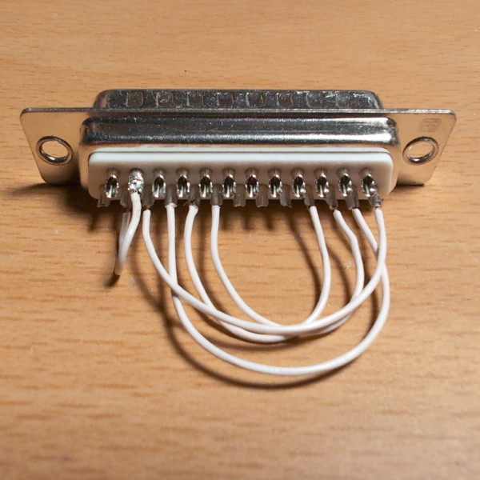

Parallel Port Loopback Test in Linux
I had trouble with a PCI express parallel port card in a modern Linux box not behaving as it should, so I decided to make a test setup. It is based on loopbacking 5 data output signals to 5 status input signals, which is the same as was done in some older DOS software.
Loopback on the parallel port plug follows the PassMark standard:
|-----------|---------|---------|
| Signal | Out Pin | In Pin |
|-----------|---------|---------|
| Error | 2 | 15 |
| Select | 3 | 13 |
| Paper Out | 4 | 12 |
| Ack Sync | 5 | 10 |
| Busy | 6 | 11 |
|-----------|---------|---------|
Here is a photo of a finished plug:

Here is the program written in C for Linux, which uses the more modern "ppdev" API instead of just writing to I/O ports directly:
#include <errno.h>
#include <fcntl.h>
#include <linux/parport.h>
#include <linux/ppdev.h>
#include <stdbool.h>
#include <stdio.h>
#include <stdlib.h>
#include <string.h>
#include <sys/ioctl.h>
#include <unistd.h>
#define DEFAULT_DEVICE "/dev/parport0"
static unsigned char get_status_pins(int fd)
{
unsigned char data;
if (ioctl(fd, PPRSTATUS, &data) == -1) {
fprintf(stderr, "ioctl(PPRSTATUS) failed: %s\n", strerror(errno));
close(fd);
exit(EXIT_FAILURE);
}
return data;
}
static void set_data_pins(int fd, unsigned char data)
{
if (ioctl(fd, PPWDATA, &data) == -1) {
fprintf(stderr, "ioctl(PPWDATA) failed: %s\n", strerror(errno));
close(fd);
exit(EXIT_FAILURE);
}
}
static void print_status_pins(unsigned char data)
{
fprintf(stdout, "ERR: %d ", (data & PARPORT_STATUS_ERROR) ? 1 : 0);
fprintf(stdout, "SEL: %d ", (data & PARPORT_STATUS_SELECT) ? 1 : 0);
fprintf(stdout, "PPO: %d ", (data & PARPORT_STATUS_PAPEROUT) ? 1 : 0);
fprintf(stdout, "ACK: %d ", (data & PARPORT_STATUS_ACK) ? 1 : 0);
fprintf(stdout, "BUS: %d\n", (data & PARPORT_STATUS_BUSY) ? 1 : 0);
}
static bool evaluate_status_pins(unsigned char data, int expected)
{
int pin_value;
bool error = false;
pin_value = ((data & PARPORT_STATUS_ERROR) ? 1 : 0);
if (pin_value != expected) {
fprintf(stdout, "ERROR is %d, but expected %d!\n", pin_value, expected);
error = true;
}
pin_value = ((data & PARPORT_STATUS_SELECT) ? 1 : 0);
if (pin_value != expected) {
fprintf(stdout, "SELECT is %d, but expected %d!\n", pin_value, expected);
error = true;
}
pin_value = ((data & PARPORT_STATUS_PAPEROUT) ? 1 : 0);
if (pin_value != expected) {
fprintf(stdout, "PAPEROUT is %d, but expected %d!\n", pin_value, expected);
error = true;
}
pin_value = ((data & PARPORT_STATUS_ACK) ? 1 : 0);
if (pin_value != expected) {
fprintf(stdout, "ACK is %d, but expected %d!\n", pin_value, expected);
error = true;
}
/* NOTE: BUSY pin is inverted. */
expected = (expected == 0) ? 1 : 0;
pin_value = ((data & PARPORT_STATUS_BUSY) ? 1 : 0);
if (pin_value != expected) {
fprintf(stdout, "BUSY is %d, but expected %d!\n", pin_value, expected);
error = true;
}
return error;
}
static void display_help(const char *progname)
{
fprintf(stdout, "Usage: %s <options>\n", progname);
fprintf(stdout, "Options:\n"
" -h Display this help.\n"
" -v Increase verbosity.\n"
" -d DEV Use parallel port DEV instead of default.\n");
fprintf(stdout, "Default parallel port device: %s\n", DEFAULT_DEVICE);
}
int main(int argc, char *argv[])
{
int c;
int fd;
int control;
char *device = DEFAULT_DEVICE;
bool verbose = false;
bool error = false;
unsigned char data;
while ((c = getopt(argc, argv, "hvd:")) != -1) {
switch (c) {
case 'h':
display_help(argv[0]);
return EXIT_SUCCESS;
case 'v':
verbose = true;
break;
case 'd':
device = optarg;
break;
case '?':
default:
display_help(argv[0]);
return EXIT_FAILURE;
}
}
fd = open(device, O_RDWR);
if (fd == -1) {
fprintf(stderr, "open() device '%s' failed: %s\n", device, strerror(errno));
return EXIT_FAILURE;
}
if (ioctl(fd, PPCLAIM) == -1) {
fprintf(stderr, "ioctl(PPCLAIM) failed: %s\n", strerror(errno));
close(fd);
return EXIT_FAILURE;
}
control = 0; /* Forward Direction */
if (ioctl(fd, PPDATADIR, &control) == -1) {
fprintf(stderr, "ioctl(PPDATADIR) failed: %s\n", strerror(errno));
close(fd);
return EXIT_FAILURE;
}
if (verbose) {
fprintf(stdout, "Using device: %s\n", device);
}
/* First set all pins to 0 and check. */
if (verbose) {
fprintf(stdout, "\nSetting all data pins to 0.\n");
}
set_data_pins(fd, 0);
data = get_status_pins(fd);
if (verbose) {
print_status_pins(data);
}
error |= evaluate_status_pins(data, 0);
/* Then set all pins to 1 and check. */
if (verbose) {
fprintf(stdout, "\nSetting all data pins to 1.\n");
}
set_data_pins(fd, 0xFF);
data = get_status_pins(fd);
if (verbose) {
print_status_pins(data);
}
error |= evaluate_status_pins(data, 1);
/* Finally set all pins back to 0 and check. */
if (verbose) {
fprintf(stdout, "\nSetting all data pins to 0.\n");
}
set_data_pins(fd, 0);
data = get_status_pins(fd);
if (verbose) {
print_status_pins(data);
}
error |= evaluate_status_pins(data, 0);
if (error) {
fprintf(stdout, "\nTest FAILED due to errors!\n");
} else {
fprintf(stdout, "\nTest PASSED without errors.\n");
}
close(fd);
return EXIT_SUCCESS;
}
Here is an example of the test failing:
Using device: /dev/parport0
Setting all data pins to 0.
ERR: 0 SEL: 0 PPO: 0 ACK: 0 BUS: 1
Setting all data pins to 1.
ERR: 1 SEL: 1 PPO: 1 ACK: 0 BUS: 0
ACK is 0, but expected 1!
Setting all data pins to 0.
ERR: 0 SEL: 0 PPO: 0 ACK: 0 BUS: 1
Test FAILED due to errors!
Indeed the "Ack" signal is faulty on this parallel port card...